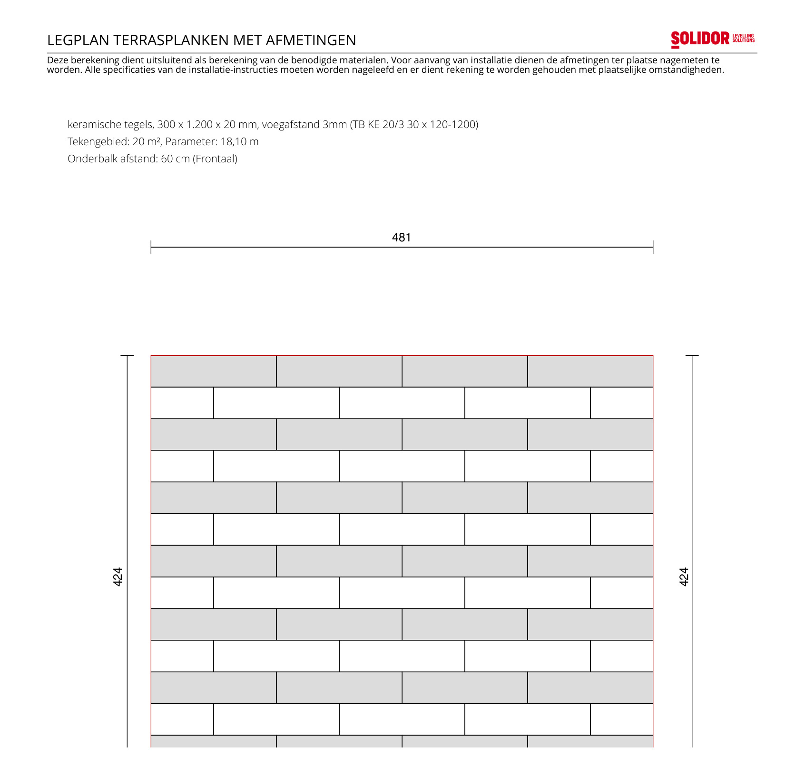
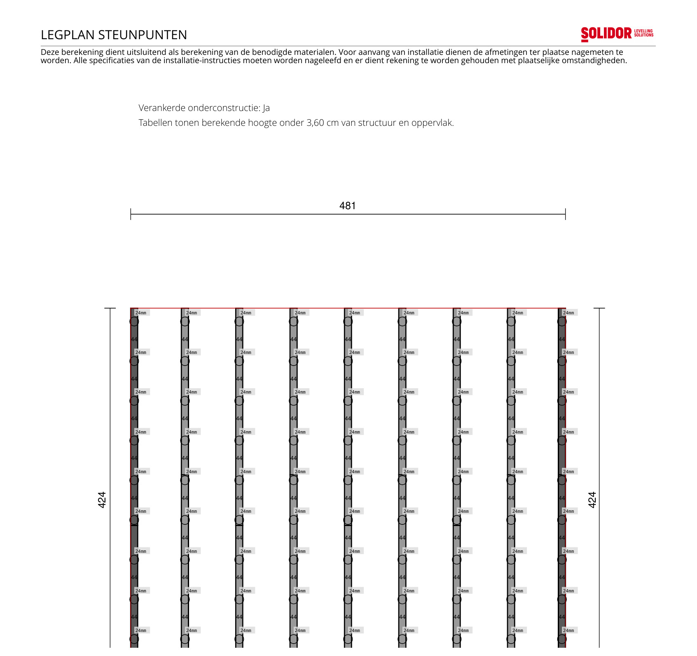

Tuintegels Specificaties
Overzicht van alle materialen en instructies voor de terrastegels
Ontwerp - afmetingen
| Onderdeel | Specificatie |
|---|---|
| Layout | 4 tegels breed × 14 tegels diep, halfsteens (staggered) legpatroon. |
| Tegel | Keramische tegel 300 × 1.200 × 20 mm (30 cm breed, 120 cm lang, 2 cm dik), voegafstand 3 mm. Art.: TB KE 20/3 30 x 120-1200. |
| Oppervlaktemaat | Breedte = 4 × 120 + 3 × 0,3 = 480,9 cm. Diepte = 14 × 30 + 13 × 0,3 = 423,9 cm. Netto oppervlak ≈ 20,39 m², omtrek 18,10 m. Bevestigd via de Solidor-ontwerptool (afgerond op 481 × 424 cm, Plan ID NL26009421) - komt overeen met de handmatige berekening. |
| Startpositie | Vloer is een rechte rechthoek en volgt niet de scheve schutting. Uitlijnen op de kortste afstand: op het dichtstbijzijnde punt van de schutting is de afstand 1 cm. Door de scheve schutting loopt dit elders (over de breedte, tussen de 9 railrijen) op tot circa 7 cm - dat restje blijft onbedekte grond. |
| Terrashoogte | 6 cm (bovenkant tegel t.o.v. ondergrond). |
| Ondergrond | Verdicht grind. |
| Onderconstructie | Enkele onderbalken, verankerd. 9 doorlopende railrijen (elk 2 segmenten van 2,4 m + 1 VF-connector), lopend van de garage tot de schutting. Rijen hart-op-hart 60 cm over de breedte; steunpunten hart-op-hart circa 44 cm langs elke rail. |
| Overstek steunpunten | Rail-overstek voorbij het buitenste steunpunt: 15 cm aan de schuttingzijde, 10 cm aan de inloopzijde. Kleinste overstek aan de kant met de meeste voetbelasting; beide ruim binnen de steunpuntafstand van ~44 cm. |
| Referentielijn | De schutting staat niet haaks. Zet daarom een rechte lijn uit via de garagemuur (verlengd) tot aan de boom aan de overzijde, en houd de vloerrand parallel aan die lijn - niet aan de schutting zelf. Bepaal op het dichtstbijzijnde punt de 1 cm afstand tot de schutting; verderop wijkt de afstand vanzelf af (tot circa 7 cm). |
Legplannen
Officiële tekeningen uit de Solidor-ontwerptool (Plan ID NL26009421) met het legpatroon en alle afstanden.


Het Structusol draagsysteem
Aluminium railsysteem (i.p.v. losse puntsteunen) dat onder de tegels ligt: de doorlopende rail (16 mm dik, 2,4 m lang) verdeelt het gewicht over een breder oppervlak voor meer stabiliteit, en de geïntegreerde rubberprofielen vangen kleine hellingen/oneffenheden op en nemen het holle geluid weg dat je anders bij grootformaat tegels op puntsteunen hoort. De rail rust op verstelbare terrasdragers (steunpunten) voor de hoogteregeling, en het geheel houdt drainage onder de tegels intact. Referentie: solidor.be.
Materiaallijst (Structusol-stuklijst, Plan ID NL26009421)
| Categorie | Materiaal | Aantal |
|---|---|---|
| Decking | Keramische tegels 300 × 1.200 × 20 mm, voegafstand 3 mm (Art.: TB KE 20/3 30 x 120-1200) | 63 st (22,68 m²) |
| Onderconstructie | Structusol aluminium draagsysteem met geluidsdempende rubber, 2.400 × 78 × 16 mm (Art.nr. 008428, Structusol 2,4 m) | 18 st |
| Onderconstructie | VF - Frontale connector Structusol (Art.nr. 008466) | 9 st (1 pakket) |
| Bevestiging | C3L - Lateraal voegstuk Structusol (Art.nr. 008149) | 28 st (1 pakket) |
| Bevestiging | C3X - Voegstuk kruis Structusol 3 mm (Art.nr. 008480) | 99 st (2 pakket) |
| Bevestiging | Blindklinknagels voor het Structusol aluminium draagsysteem (Art.nr. 008675) | 292 st (1 pakket) |
| Tegelelementen | KF - Frontale muurafwerking Structusol (Art.nr. 008531) | 18 st (1 pakket) |
| Tegelelementen | KL - Laterale muurafwerking Structusol (Art.nr. 008533) | 30 st (1 pakket) |
| Terrasdragers | Regelbare drager PV 2.3/3.5 - Comfort gamma, hoogtebereik 23-35 mm (Art.nr. 011000) | 90 st |
| Terrasdragers | Comfort C-Clip bovenplaat, voor ondersteuning van het Structusol draagsysteem (Art.nr. 009777) | 90 st |
| Fundering | EXCLUTON Opsluitband grijs 100 × 20 × 6 cm - hornbach.nlbesteld & binnen | 38 st |
Deze aantallen zijn exact berekend voor dit ontwerp en bevatten geen reservehoeveelheid - bij bestellen rekening houden met een marge voor breuk/zaagverlies. Het volledige ontwerp is terug te vinden op solidor.be onder Plan ID NL26009421, pincode 388CD2.
Opsluitbanden - fundering onder de rails
| Onderdeel | Specificatie |
|---|---|
| Functie | Opsluitbanden liggen plat als stevige ondergrond onder zowel de rails als de tegels (geen staande boordafwerking). |
| Indeling | 1 rij opsluitband per railrij (9 rijen totaal). Elke rij krijgt 4 banden van 100 cm tegen elkaar (= 400 cm, geen tussenruimte) voor doorlopend stevige ondergrond onder de steunpunten, daarnaast 2 stuks reserve (36 + 2 = 38 st). |
| Startpunt | Elke rij begint tegen de garage. De rails zelf houden overal 1 cm marge tot zowel de garage als de schutting. |
| Eindpunt | Aan de schuttingzijde stopt de opsluitband na 400 cm; het laatste stukje rail (tot 1 cm op het dichtstbijzijnde punt, elders tot circa 7 cm door de scheve schutting) wordt niet door een band ondersteund - daar ligt de laatste tegel overheen en blijft de rest onbedekte grond. |
Installatie-instructies
| Categorie | Instructie |
|---|---|
| Referentielijn | De schutting staat niet haaks - zet de vloer dus niet uit vanaf de schutting zelf. Zet een rechte lijn uit via de garagemuur (verlengd) tot aan de boom aan de overzijde en houd de vloerrand parallel aan die lijn. |
| Startpositie | Vloer uitlijnen op de kortste afstand tot de schutting: 1 cm op het dichtstbijzijnde punt. Door de scheve schutting loopt dit tussen de 9 railrijen op tot circa 7 cm - dat restje blijft onbedekte grond, geen tegel of band. |
| Ondergrond | Verdicht grind, waterpas en voldoende afwaterend aanleggen voordat de opsluitbanden en onderbalken geplaatst worden. |
| Fundering opsluitbanden | Per railrij 4 opsluitbanden (100 cm) plat leggen als ondergrond, startend tegen de garage. 9 rijen totaal, 2 banden reserve. |
| Onderconstructie | Enkele onderbalken (Structusol-rails), verankerd, 9 rijen van garage tot schutting op een onderlinge afstand van 60 cm (frontaal). Rails houden 1 cm marge tot garage en schutting. Steunpunten hart-op-hart circa 44 cm; overstek buitenste steunpunt 15 cm (schuttingzijde) / 10 cm (inloopzijde). Rails rusten op de verstelbare terrasdragers (PED 23-35, hoogtebereik 23-35 mm). |
| Legpatroon | Halfsteens (staggered) verband, 4 tegels breed × 14 tegels diep, voegafstand overal 3 mm (voegstukken C3L/C3X borgen deze afstand tijdens montage). |
| Terrashoogte | 6 cm eindhoogte vanaf de ondergrond. |
| Muurafwerking | Frontale (KF) en laterale (KL) muurafwerkingsclips gebruiken waar de tegelvloer tegen een muur of opstaande rand aansluit. |
Checklist voor het Gesprek met de Aannemer
Aandachtspunten tijdens de aanleg van de terrastegels
1. Voorbereiding
- Zet eerst de rechte referentielijn uit (garage tot de boom aan de overzijde) - de schutting staat scheef, dus lijn de vloer daarop uit, niet op de schutting zelf. Kortste afstand tot de schutting = 1 cm.
- Controleer of de ondergrond (verdicht grind) waterpas en stabiel genoeg is voor de opsluitbanden en verankerde onderbalken.
- Bestel voldoende reservemateriaal boven op de exacte Structusol-stuklijst (geen reserve inbegrepen).
2. Installatie
- Opsluitbanden plat leggen als fundering: 4 per railrij, startend tegen de garage (9 rijen, 2 banden reserve).
- Onderbalken (rails) op 60 cm afstand plaatsen en verankeren; steunpunten op circa 44 cm hart-op-hart langs elke rail.
- Tegels in halfsteens verband leggen, met de voegstukken (C3L/C3X) voor een consistente voeg van 3 mm.
- Frontale en laterale muurafwerking (KF/KL) monteren waar de vloer tegen een muur of rand aansluit.